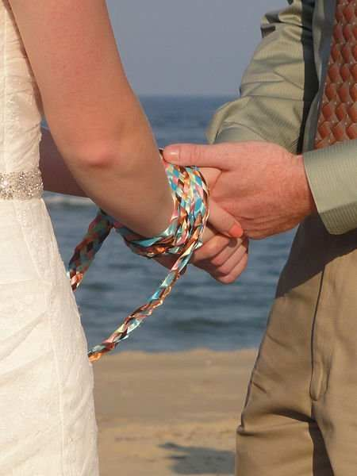
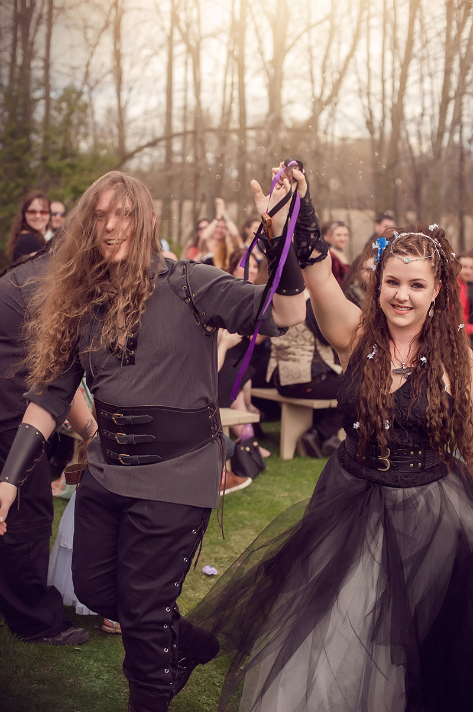
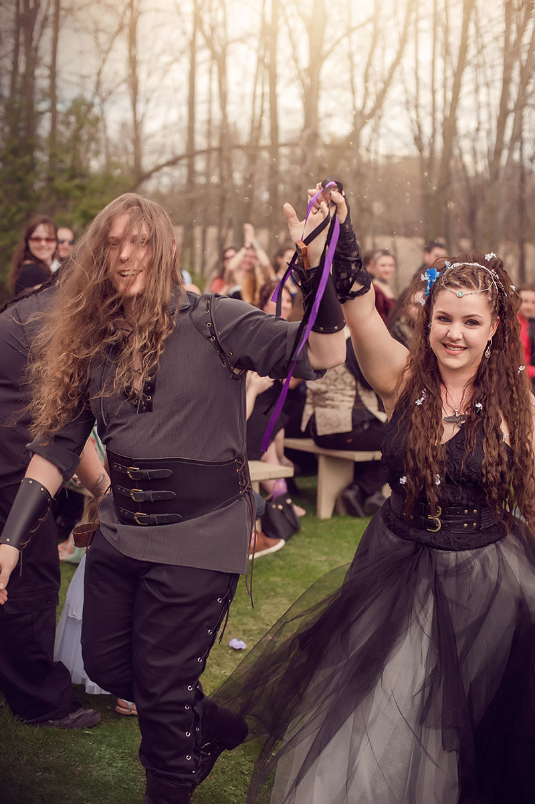
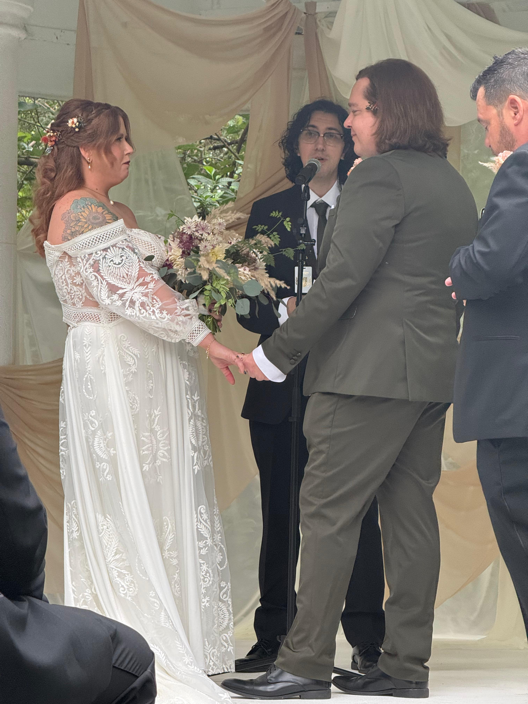

Testimonials


We got hitched at the courthouse in 2021 and knew we wanted to have a real wedding with our friends and family someday. We don't go to a church and did not know who to trust. Reverend Eli met with us free of charge, asked to hear our story, and told us why he wanted to help us. We met six more times until we had a plan for our own special day, with our own vows and our own values. We've been husband and wife since 2021, but after our ceremony we now feel truly married. Eli is the best!
- Lydia & Tim m. 2024

My partner and I wanted a personalized ceremony that let us celebrate who we are as individuals and as a couple. We didn't hire a wedding planner and didn't know where to start. Reverend Eli gave us a business card at a crafts store while shopping for another couples' wedding and we immediately knew that he would go the extra mile to make sure that our day was unique and unforgettable. He introduced us to caterers, musicians and florists and got us a great rate. Thanks Reverend Eli!
- Joan & Glenn m. 2025
We were so nervous because we didn't know what to say to each other. We thought we wanted to get the ceremony over with as soon as possible. He spent hours with us in person, on the phone, and via email, helping us discover that we had tbe ability to write beautiful and unique vows. Everyone told is it was the best ceremony they ever saw!
- Daniel & Amanda T
4.5 Stars on WeddingWire
Contact me at elikvertrees@gmail.com